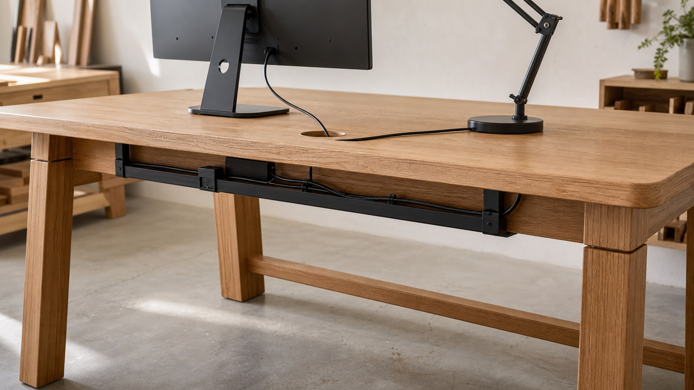

책상 배선 정리가 사용감을 바꾸는 이유

책상을 고를 때 가장 먼저 보는 것은 상판의 크기와 높이입니다. 하지만 실제로 오래 쓰다 보면 모니터 선, 노트북 충전기, 조명, 스피커, 멀티탭의 위치가 작업감을 크게 바꿉니다. 선이 상판 위를 가로지르면 마우스와 노트를 놓는 자리가 줄고, 바닥으로 늘어진 선은 의자 바퀴와 발에 걸립니다. 배선 정리는 단순한 정돈 습관이 아니라 책상 설계의 일부입니다.
원목 책상에서는 배선 구조가 더 중요합니다. 상판에 뚫는 케이블 홀은 한 번 정하면 쉽게 되돌리기 어렵고, 하부 트레이는 앞치마와 다리 구조, 사용자의 무릎 공간을 함께 고려해야 합니다. 그래서 좋은 배선 설계는 선을 숨기는 데서 끝나지 않고, 사용자가 편하게 앉고 장비를 쉽게 바꾸며 안전하게 관리할 수 있는 길을 만드는 일에 가깝습니다.
작업면은 손이 자주 쓰는 물건을 위한 자리입니다
OSHA의 컴퓨터 작업대 지침은 책상 위 공간이 부족하면 마우스, 키보드, 모니터가 불편한 위치로 밀려나 어깨와 목, 손목 자세에 영향을 줄 수 있다고 설명합니다. 케이블이 상판을 가로지르는 상태도 같은 문제를 만듭니다. 선 하나는 가늘어 보여도 사용자는 그 선을 피해서 마우스를 움직이고, 노트북을 돌려 놓고, 종이를 비스듬히 놓게 됩니다.
케이블 홀은 모니터 뒤쪽이나 장비가 고정되는 영역에 두는 편이 자연스럽습니다. 손이 반복해서 오가는 중심 작업 구역을 지나지 않아야 하고, 노트북을 오른쪽과 왼쪽 어느 쪽에 놓아도 충전선이 팔의 움직임을 막지 않아야 합니다. 특히 주문 제작 책상에서는 주 사용 장비의 위치를 먼저 정하고, 그 장비가 바뀔 가능성까지 고려해 홀의 개수와 위치를 조정하는 것이 좋습니다.
하부 트레이는 선을 숨기는 상자가 아닙니다
책상 아래 배선 트레이는 선과 멀티탭을 바닥에서 들어 올려 의자 바퀴, 청소기, 발의 움직임에서 분리합니다. 다만 트레이가 너무 앞쪽에 있으면 무릎과 닿고, 너무 깊숙하면 플러그를 꽂거나 뺄 때 매번 책상 아래로 몸을 많이 넣어야 합니다. 사용자가 앉은 자세에서 보이지 않되, 점검할 때는 손이 닿는 위치가 가장 실용적입니다.
트레이의 깊이는 멀티탭과 어댑터의 실제 두께를 기준으로 봐야 합니다. 노트북 어댑터처럼 큰 부품은 단순한 케이블보다 열과 부피를 함께 고려해야 하고, 억지로 눌러 넣으면 플러그 주변이 꺾입니다. 트레이 안에는 여유 길이를 작은 고리로 남기되, 선이 당겨져 장비나 콘센트에 힘을 주지 않도록 클립과 벨크로 타이를 함께 쓰는 편이 안정적입니다.
다리 공간은 배선보다 우선합니다
OSHA는 책상 아래에 물건이 쌓이면 다리와 발을 움직일 공간이 줄고, 사용자가 장비 쪽으로 몸을 기울이거나 자세를 자주 바꾸기 어려워진다고 봅니다. 배선 트레이와 전원 장치도 이 원칙에서 예외가 아닙니다. 선을 정리한다는 이유로 하부 공간을 크게 차지하면, 겉보기에는 깔끔해도 실제 사용감은 나빠질 수 있습니다.
원목 책상의 앞치마가 깊은 경우에는 트레이를 앞치마 바로 뒤에 붙이는 방식이 편하지 않을 수 있습니다. 무릎 위 여유가 부족해지고, 의자가 안쪽으로 들어가는 깊이도 줄어듭니다. 이럴 때는 뒤쪽 보강재와 벽 사이의 공간을 쓰거나, 상판 뒤쪽에 얕은 배선 홈을 두는 방식이 더 낫습니다. 배선 설계는 구조를 보강하는 부재와 사용자의 몸이 지나가는 빈 공간 사이에서 균형을 잡아야 합니다.
전기 안전은 가구가 대신 해결할 수 없습니다
가구는 케이블을 정리할 수 있지만, 전기 제품의 정격과 안전한 사용 조건까지 대신 판단하지는 못합니다. CPSC는 연장 코드의 손상, 과부하, 잘못된 사용이 화재와 감전 위험을 높인다고 안내하며, 러그나 카펫 아래로 코드를 지나가게 하지 말라고 설명합니다. 책상 아래 배선도 같은 태도로 봐야 합니다. 보이지 않게 숨기는 것보다 손상과 열, 과부하를 확인하기 쉬운 상태가 중요합니다.
멀티탭은 통풍이 되는 위치에 두고, 플러그와 어댑터가 목재나 금속 모서리에 눌리지 않게 해야 합니다. 케이블 홀 가장자리는 손과 선이 반복해서 닿는 곳이므로 거칠게 남겨 두지 않고 부드럽게 다듬어야 합니다. 금속 링이나 플라스틱 그로밋을 쓰면 마감면을 보호하고 선 피복이 직접 마찰되는 일을 줄일 수 있습니다.
장비가 바뀌어도 정리가 유지되어야 합니다
작업 환경은 고정되어 있지 않습니다. 모니터가 하나에서 둘로 늘거나, 노트북 도킹 스테이션을 쓰거나, 스탠드 조명을 다른 위치로 옮길 수 있습니다. 케이블을 너무 촘촘하게 묶으면 처음에는 깔끔하지만 장비를 바꿀 때 전체를 다시 풀어야 합니다. 좋은 배선 설계는 정리된 상태와 수정 가능한 상태를 함께 남깁니다.
이를 위해서는 케이블 홀 하나에 모든 선을 몰아넣기보다 장비군별로 길을 나누는 편이 좋습니다. 모니터와 데이터 케이블, 조명과 충전 케이블, 멀티탭 전원선의 방향을 구분하면 교체와 청소가 쉬워집니다. 사용자가 자주 뽑는 충전선은 완전히 숨기지 말고 손이 닿는 지점에 짧게 남겨 두어야 합니다.
목간의 시선
목간이 책상을 볼 때 배선은 부가 옵션이 아니라 생활의 흔적을 정리하는 구조입니다. 상판 위는 일하는 손을 위해 비워 두고, 하부는 몸이 편하게 들어갈 만큼 남겨 두며, 선은 보이지 않는 곳에서도 무리 없이 움직여야 합니다. 좋은 책상은 처음 설치한 날만 깔끔한 물건이 아니라, 장비가 조금 바뀌고 시간이 지나도 다시 정리하기 쉬운 물건입니다.
주문 제작을 상담할 때는 사용하는 모니터 수, 노트북 위치, 조명과 충전기의 방향, 콘센트가 있는 벽의 위치를 함께 확인하는 것이 좋습니다. 그 정보가 있어야 케이블 홀의 위치, 트레이의 깊이, 하부 보강 구조가 서로 방해하지 않습니다. 배선이 잘 정리된 책상은 조용해 보이지만, 그 조용함 안에는 사용자의 하루를 덜 번거롭게 만드는 설계가 들어 있습니다.